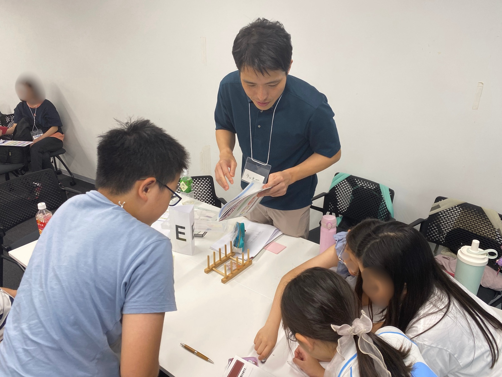
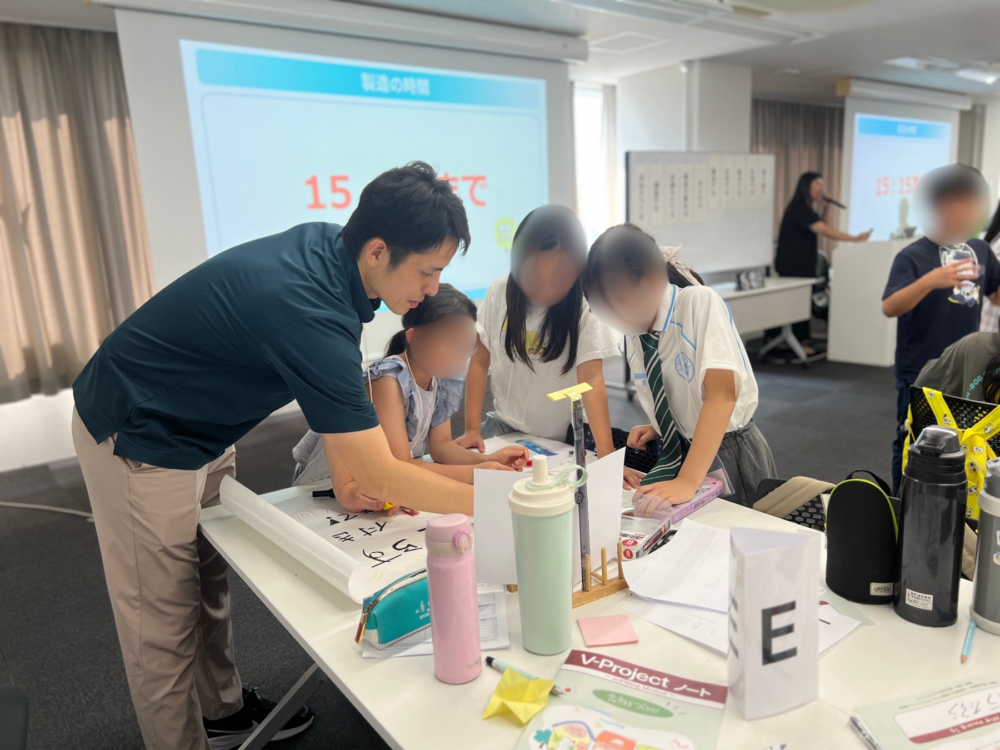

自分で考える
身のまわりの課題を発見し、誰かのためのアイデアに変える。
ホーム ／ 社会貢献
SOCIAL CONTRIBUTION / NBC JUNIOR
現役の経営者とともに、考え、選び、つくり、届ける。 NBCジュニアは、小学生から大学生までの若い世代に “起業家精神”を育む実践型の教育プロジェクトです。
私たちの取り組みを見る
LEARN BY DOING
学びを、実践の中へ。
NBCジュニアは、一般社団法人 東京ニュービジネス協議会が取り組む、 小学生から大学生までを対象とした起業家教育プロジェクトです。
経営者や企業、教育機関と出会い、社会にある課題を自分ごととして考える。 アイデアを言葉にし、仲間と試し、失敗から学ぶ。その経験を通して、 自ら未来を切り拓く力を育てます。
東京NBC公式ページ
大人が答えを渡すのではなく、子どもたち自身が問いを立て、決め、動く。 経営者は、その挑戦に本気で向き合う伴走者になります。
身のまわりの課題を発見し、誰かのためのアイデアに変える。
意見の違いを受け止め、役割を担い、一つの答えをつくる。
うまくいかない経験も糧にして、試し、直し、もう一度挑む。
身近な社会課題をテーマに、会社設立から決算まで。 現役経営者や金融機関の協力のもと、ビジネスの流れを実践的に学びます。
仲間と役割を決め、会社の目的と届けたい価値を言葉にします。
誰の、どんな困りごとを解決するのか。調査をもとに事業を考えます。
事業計画を伝え、金融機関との対話や融資のプロセスを体験します。
限られた時間と資源の中で、チームのアイデアをかたちにします。
ポスターや発表を工夫し、考えた価値を相手に届け、販売します。
決算までを行い、成功も失敗も次の挑戦につながる学びに変えます。
※プログラム内容は開催回により異なります。上記は2025年9月28日「会社をつくろう！ワークショップ」の内容をもとに構成しています。
THE COURAGE TO CREATE THE FUTURE.
未来をつくる勇気は、
小さな「やってみたい」から。
会社をつくろう！ワークショップ
早稲田大学 早稲田キャンパスに、小学2年生から中学3年生までの20名が集合。 5人1組の各チームに現役経営者がメンターとして加わり、 「防災グッズ」をテーマに8時間を超える会社づくりへ挑みました。
市場調査、事業計画、金融機関からの借入、仕入れ、広告、販売、決算。 子ども扱いをしない真剣な対話の中で、何度も立ちはだかる壁を乗り越え、 最後は自分たちの事業を堂々とプレゼンテーションしました。
株式会社籠やは、NBCジュニアの活動に経営者メンターとして参加しています。 事業をつくる現場で培った知識や経験を、子どもたちが自分の未来を考えるきっかけへ。 一人ひとりの発想を尊重しながら、本気の対話で挑戦に伴走します。